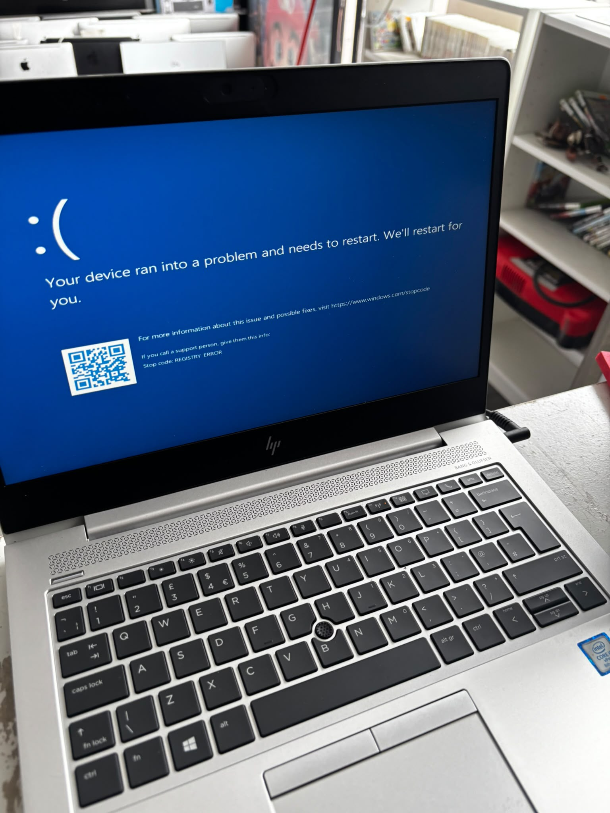
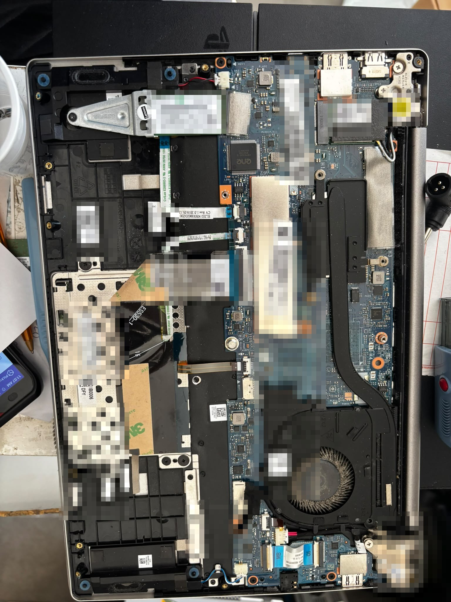
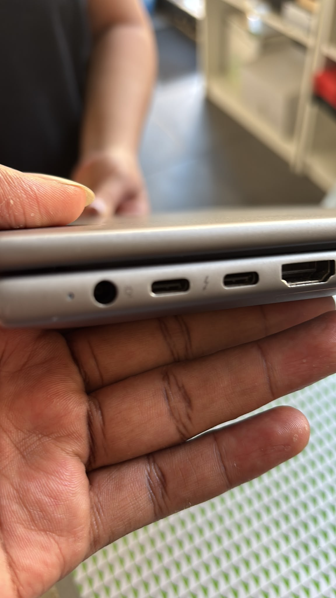
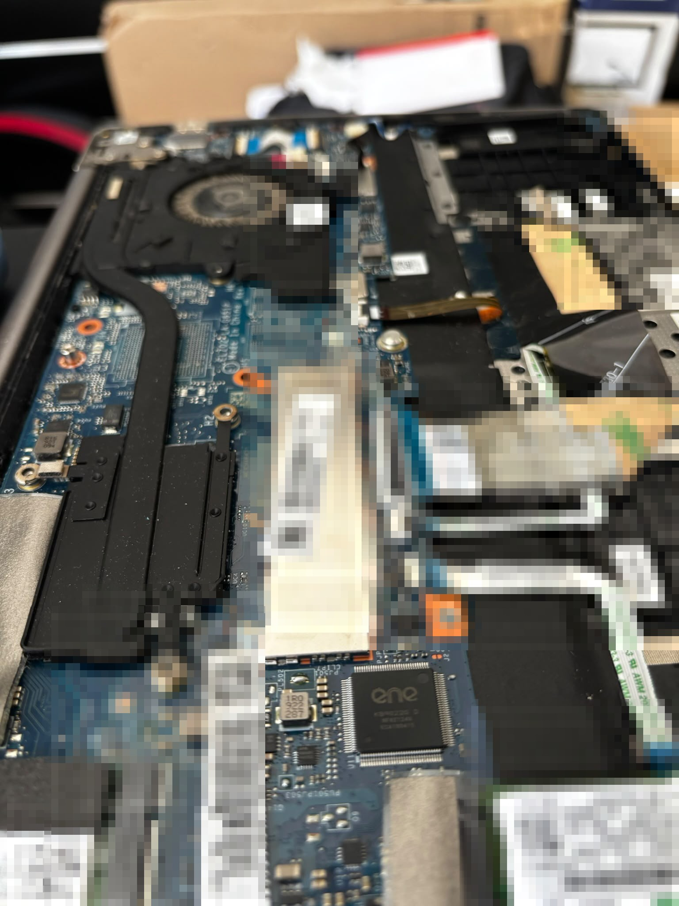

Rapport de stage — 1re année
Stage technicien support informatique · Les Réparateurs Mac et PC, Montreuil.
Ouvrir le rapport PDFÀ PROPOS · SYSTÈMES · RÉSEAUX · CYBERSÉCURITÉ
Étudiant en 2e année de BTS SIO, option SISR
Institut F2i · Paris — Intéressé par l’administration systèmes et réseaux et la cybersécurité.
1ère année effectuée (11/2025 – 06/2026) ; actuellement en 2e année en formation initiale.
ECES — Pointe-Noire, Congo-Brazzaville
Le SELIMA — Pointe-Noire, Congo-Brazzaville
Windows Server 2022Active DirectoryGPODHCPDNSWDSLinux (Ubuntu)VMwareSamba AD-DC
TCP/IPVLAN / VTP CiscoPacket TracerpfSenseIPFireHAProxyKeepalivedSSH
GLPI + LDAPSupport N1/N2Documentation techniqueMatériel PC/Mac
HTMLCSSPHPPythonMySQLVS CodeDB BrowserLoopingWordPress
Langues : français et lingala (courants), kituba (courant), anglais A2 en progression.
Stage et rapport de stage associés à mon expérience en support et maintenance informatique.
Les Réparateurs Mac et PC — Montreuil




Stage technicien support informatique · Les Réparateurs Mac et PC, Montreuil.
Ouvrir le rapport PDFTableau récapitulatif de mes compétences et de mes réalisations pour l’épreuve E5.
Télécharger le tableau ExcelCette rubrique regroupe mes projets et travaux pratiques de formation. Les réalisations directement liées à la cybersécurité sont présentées en premier.
Application de stratégies GPO et restriction de cmd.exe et PowerShell via AppLocker.
Installation d’IPFire, accès SSH et capture de logs ; étude des principes CIA, AAA et des risques d’ingénierie sociale.
Réalisations · Formation
Des environnements systèmes et réseaux aux applications web, un aperçu concret des projets réalisés pendant mon parcours.
Serveur virtualisé avec Active Directory, gestion des comptes et droits, services DHCP et DNS, déploiement WDS et GLPI connecté à LDAP.
Voir les travaux pratiquesConfiguration de VLAN / VTP sur switchs Cisco et mise en place de pare-feu pfSense et IPFire dans un environnement virtualisé.
Voir les travaux pratiquesInfrastructure sous Ubuntu utilisant Keepalived et HAProxy pour mettre en œuvre et tester la bascule entre serveurs.
Voir les travaux pratiquesRéalisation de sites web avec interfaces et fonctionnalités développées en HTML, CSS, PHP et MySQL.
Voir les travaux pratiquesLa sécurisation des infrastructures systèmes et réseaux : durcissement d’Active Directory, segmentation réseau et évolution des pare-feu open source. Pour chaque actualité, ajouter la date, un résumé personnel et un lien vers la source.
MOOC de sensibilisation à la cybersécurité — ANSSI.
Voir le certificatCisco Networking Academy.
Voir le certificatCisco Networking Academy.
Voir le certificatConsultez ou téléchargez mon CV au format image.
Ouvrir mon CVNoisy-le-Grand (93) · Stephanetathy26@gmail.com · +33 6 35 58 30 98
Objectif : alternance en administration systèmes et réseaux, avec une évolution à long terme vers la cybersécurité.